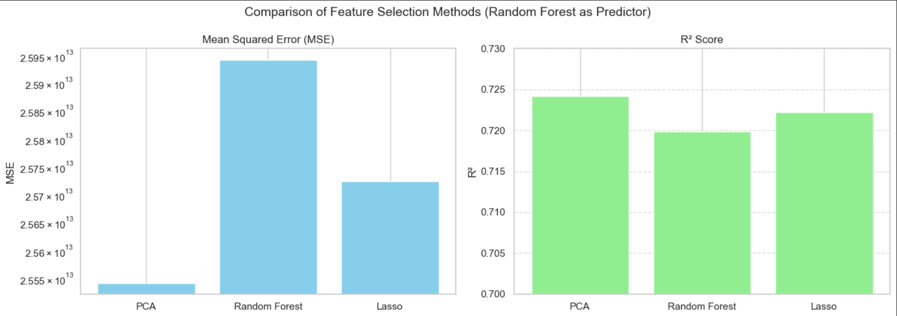

data Wrangling project group 5
NBA Salary Analysis
Present by: Group 5
member: Ruiqi Qian, Zhishen Lin, Jiachen Xu, Zhechongyue, Xu
This subtitle utilizes two datasets, which contain information on NBA players’ salaries from 2019 to 2023, as well as their positions, average points per game, average rebounds, and average assists. The aim of this section is to analyze these two datasets and link players’ salaries with their on-court performance, in order to study the relationship between players’ statistical performance and their salaries.
Project Summary
Accessing data
Our raw data can be downloaded here:
Our processed data can be downloaded here:
NOTE: do not include your data in your git repo - it will likely be too large and cause issues.
Python scripts / notebooks
The following scripts/notebooks were used produce the summary:
src/script.pynotebooks/data_cleaning.ipynbnotebooks/data_enrichment.ipynbnotebooks/data_analysis.ipynb
[Give a short description of what the notebooks contain, and their location in the git repo]
data_cleaning/data_cleaning.ipynb
This notebook focuses on cleaning and preprocessing the raw NBA datasets. Key tasks include handling missing values, converting data types, standardizing formats, and selecting relevant features. It ensures the data is ready for analysis and modeling in subsequent stages.
visualization/visual.ipynb
This notebook provides visual insights into the NBA data through various plots and charts. It explores relationships between player salaries and performance metrics such as points, rebounds, and assists. Visualizations help uncover trends and patterns that support the modeling phase.

model/Model.ipynb
This notebook develops predictive models to analyze or forecast NBA player salaries based on performance and other features. Techniques may include linear regression or machine learning algorithms. It evaluates model performance and interprets the results in context. We used lasso regression, random forest and PCA to choose features and predict the outcome.

Reproducibility
Provide a requirements.txt file with packages and versions of all python packages to run the analysis.
Guide
Summary
Datasets: We used two main CSV datasets:
- Player performance (PER, TS %, PTS, REB, AST, etc.) sourced from a public GitHub repo (madhurn1/PredictiveNBAContractValuationModel) covering the 2019 – 2024 seasons.
- Annual salaries for the same players for 2019/20–2023/24, obtained from a Kaggle dataset (Justinas’s NBA Players Data). Both are simple, comma‑delimited files updated once per season, with key fields like playerName (or Player), season columns (e.g. 2021/22), and per‑game metrics .
Data Retrieval: All raw CSVs were downloaded manually via the Kaggle and GitHub web interfaces. No APIs or scraping were required .
Data cleaning & tidying: We loaded NBA player stats and salary data from 2019–2024. We cleaned the data by:
- Dropping missing values (e.g., in PER, TS%, salary, and position).
- Standardizing column names (e.g., changing Player to player_name).
- Selecting important columns like Season, Player, PER, TS%, Salary, and Position.
- Splitting the data by season for easier processing.
- Merging player stats with their position data, ensuring no missing positions. At each stage, we saved cleaned datasets to CSV files, preparing tidy, analysis-ready data organized by season.
Validation tests: Throughout cleaning we verified:
- Row counts via print(df.shape) and sample df.head().
- No missing values in key fields with df.isnull().sum() == 0.
- Reasonable value ranges by inspecting df.describe() for outliers or nonsensical entries.
Data enrichment:
- Created a consolidated PER‑TS% table (PER‑TS%.csv) for quick analysis of season‑by‑season efficiency metrics.
- Added a unified season column in the analysis notebook (Model.ipynb) to tag each record with “2019‑20”, “2020‑21”, etc., enabling cross‑season concatenation.
- Derived correlation subsets (PTS, REB, AST vs. salary) for targeted heatmap generation .
Descriptive statistics:
- Used df.describe() to report mean, median, quartiles, and standard deviations for numeric fields across seasons.
- Tabulated average salary by position to highlight pay gaps (e.g. guards vs. centers).
- Summarized PER and TS % distributions to identify shifts in league‑wide efficiency over time .
Visualizations:
- Boxplot of Player Efficiency Rating (PER) by Season
From 2019–20 through 2023–24, the PER distribution has grown wider, indicating greater disparity in individual efficiency. This means teams may exploit efficiency outliers—both recruiting high‑end performers and avoiding low‑efficiency contracts. - Density Plot of Points per Game (PTS) Over Time
League‑wide scoring has crept upward each season, with 2023–24 showing the highest mean PTS density shift, indicating the modern NBA’s pace‑and‑space style continues to elevate scoring outputs. - Salary vs. Points per Game (Log Scale)

There’s a clear log‑linear salary premium: each additional PPG beyond ~20 yields an outsized pay bump. For high‐scoring “superstars”, they are able to capture exponentially larger contracts. - Correlation Heatmap of Performance Metrics vs. Salary
PTS (r≈0.74) correlates most strongly with salary, followed by AST (r≈0.58) and REB (r≈0.49). It shows that scoring remains the dominant driver of pay, though rebounding and playmaking are also rewarded.
- Boxplot of Player Efficiency Rating (PER) by Season
Git Commit History: